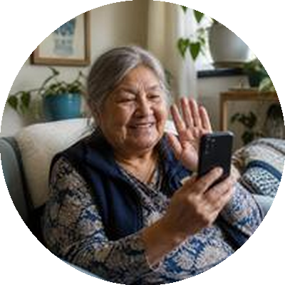

Independence at Home.
Peace of Mind for Families.
Senior Life Navigator is a non-medical senior care coordination service for families in Waterloo Region and Guelph. We help with appointments, government forms, tech help, home safety and the everyday logistics of aging at home, so you have one trusted local person to call.
No obligation. Email is the fastest way to reach us.
Government & Admin Navigation
Help understanding letters, forms, and processes from CRA, Service Canada, and OHIP.
Home & Tech Support
Home safety improvements and getting comfortable with phones, tablets, and video calls.
Appointments & Errands
Companionship for appointments, errands, and everyday outings.
Family Updates
Regular updates for family members who live far away or have busy schedules.
Whether you're an adult child living across the country or just across town, staying on top of a parent's appointments, paperwork, home safety, and day-to-day errands can be a lot to carry alone. We're your local, trusted point of contact: someone who knows Waterloo Region and is there when you can't be.
You don't have to do this alone.
Whether you live in Waterloo Region or across the country, staying on top of a parent's appointments, paperwork, home safety, and day-to-day needs can be a lot to carry, especially alongside your own job, kids, or busy schedule.
If you're close by
We take the coordination off your plate: the phone calls, the research, the follow-through, so your time with your parent can be about being family, not managing logistics.
If you're far away
We're your eyes and ears on the ground. You get regular updates, a direct line to someone who's actually been there, and the confidence that things are being looked after even when you can't be there yourself.
For your parent
Staying in their own home, on their own terms, with steady, familiar support for the everyday things that add up.
For your family
Someone you trust close by, when you're far away or stretched thin: one reliable local contact instead of juggling a dozen services alone.
- One point of contact, instead of juggling a dozen services alone.
- Honest, plain-language updates. No jargon, no runaround.
- A local partner who knows Waterloo Region's services, programs, and people.
Wherever your family is starting from, we can help
Adult Children Living Nearby
You're close by but stretched thin between work, kids, and checking in. We handle the recurring logistics so your visits can be about connection, not chores.
Learn more →
Adult Children Living Out of Town
You can't be there day-to-day. We're your eyes, ears, and hands on the ground in Waterloo Region, with regular updates so you're never in the dark.
Learn more →Seniors Living Independently
You want to stay in your own home, on your own terms. We help with the practical pieces: technology, appointments, paperwork, so independence stays realistic.
Learn more →Families After a Health Change
A recent diagnosis, fall, or hospital stay changed things. We help build a coordination plan so the next chapter is organized, not overwhelming.
Learn more →A simple place to start
Reach Out
Call, message, or fill out the contact form. A first conversation is free, with no obligation. We'll listen to what's going on and talk honestly about whether Senior Life Navigator is the right fit.
Build a Plan Together
We'll talk through what kind of support makes sense: a single visit, or an ongoing coordination plan, gather the details that matter (your family's situation, priorities, and any relevant contacts), and put it all in writing.
Stay Connected
We deliver the support, keep family in the loop with regular updates, and adjust as things change, so no one is left wondering how things are going.
Everyday support, organized around real life
Straightforward pricing, upfront, because families shouldn't have to ask just to find out if something is in reach.
Our non-medical senior life coordination serves seniors and families across Waterloo Region, including Kitchener, Waterloo, Cambridge, Elmira and New Hamburg, as well as Guelph, Stratford and nearby Paris.
Not sure what you need? That's normal. Most families aren't. Email info@seniorlifenavigator.ca (fastest way to reach us) or call (519) 804-6141 and we'll help you figure out where to start.
Appointments & Everyday Support
Someone alongside you for appointments, errands, and everyday outings.
Appointment Companion$40–60/hr
Accompaniment to appointments, follow-through, and a summary afterward. We don't drive — local transportation is arranged separately.
Errand & Shopping Support$40–60/hr
Accompaniment to the grocery store, pharmacy, bank, or café, and shopping help. We never handle your money.
Transportation Coordination$45–75
Arranging local transportation and coordinating the day, including rides to and from appointments, airport trips, and return journeys. We don't drive clients ourselves.
Companionship Visits$40–50/hr
Simple, friendly support — a short visit, a quick question answered, a small favour.
Comprehensive Coordination Support$65–85/hr
Open-ended, multi-step requests that touch several people or organizations.
Family Connection
Regular visits and updates, so your parent stays connected and you stay in the loop.
Coffee Visit$40/visit
A one-hour conversation visit — catching up on current events, a memory game or two.
Community Connection$75
A 45-minute meeting with referrals to a seniors' centre, library, or volunteer opportunity, plus help registering.
Monthly Peace-of-Mind$349/mo
A weekly one-hour visit (4/month), a short monthly status update to the person you choose, and priority phone/text support.
Government & Paperwork
Patient help with forms and applications, so nothing gets missed.
Government Navigation$45–75/form
Help completing OHIP, CRA, CPP/OAS, and Service Canada applications. We never sign as your representative.
Family Admin Express$45–75
Help completing a single form or application.
OHAH Preparation$150–200
A 60-minute pre-assessment prep session, a post-assessment gap analysis, and a recommended blend of public and private support.
Community & Referrals
Help finding local services, retirement residences, and community groups.
Group Workshops$250–800
A 2-hour group seminar for an organization — scam awareness, tablet use, or navigating government services.
Retirement Residence Research & Accompaniment$65–85/hr
Researching residences based on your needs and budget, side-by-side comparisons, and accompaniment on tours — help asking the right questions, start to finish. The decision itself is always yours; we never make it for you. We never accept commissions or referral fees from retirement residences.
Home Organization & Cleaning Referral$40–60/hr
We assess your needs and find a local organizing or cleaning provider, then coordinate the appointment — billed hourly for this search/coordination time. We don't do the organizing or cleaning ourselves; the provider separately pays us a referral fee, at no extra cost to you.
Yard & Pet Care Referral$40–60/hr
We research and coordinate (introductions, scheduling) a local yard-care or pet-care provider — billed hourly for the search/coordination time. We never do the work ourselves; payment for the service itself goes directly to the provider.
Other Referrals on Request
Looking for something that isn't on this list? Tell us what you need. We'll let you know whether we can help directly, help you find a local provider, or whether it's outside what we do. Any cost is confirmed in writing before we start.
Planning & Coordination
Bigger changes, planned step by step: a home plan, a move, or the right professionals.
Aging-at-Home Coordination Plan$1,000–1,500
A 9-step plan: pre-intake, home-readiness observation, home modification planning, smart home tech setup, emergency planning, transportation planning, community connections, and seasonal planning — delivered as a written action plan with 30-day follow-up.
Annual Review$250
A 60-minute yearly check-in — updating the action plan, reviewing installed systems, and written recommendations.
Downsizing Coordination$1,500+
A moving timeline, document digitization, change-of-address notifications, sorting guidance, and coordination with third-party movers and services. We never buy or sell belongings.
Estate Planning Coordination$250–500
Research for a lawyer, accountant, or financial advisor, booking the first appointment, and administrative follow-up. We never give legal advice, prepare documents, or take a commission.
Technology & Home Safety
Small, practical steps toward feeling safe and comfortable at home.
Tech Starter Visit$89
A 90-minute home visit — phone/tablet setup, MyChart, Zoom setup, scam-awareness basics, and an online banking walkthrough.
Smart Home Safety Setup$300–500+
Installation and training for smart doorbells, motion-sensor lighting, and emergency buttons (battery/plug-in devices). Work needing permanent wiring is referred to a local electrician.
Canada is aging fast, and families can't do it all alone
Work, distance, and busy lives make it hard to be there for every appointment and errand. That's exactly where we step in.
Sources: Statistics Canada (2023 population estimates); Canadian Centre for Caregiving Excellence, Caring in Canada (2023 national survey). Checked September 2026.
The reassurance of a professional, the warmth of a local guide
Senior Life Navigator was built around one idea: families shouldn't have to juggle a dozen services alone to keep a parent safe, informed, and connected at home.
- Local to Waterloo Region. We know the hospitals, the transit options, and the community resources here, not a call centre somewhere else.
- Registered & accountable. Locally registered Ontario business with a completed Vulnerable Sector Check, carrying $2,000,000 general and professional liability coverage.
- Multilingual & culturally aware. Comfortable coordinating across language and cultural differences in a diverse region.
- Non-medical, coordination only. We never make medical, legal, or financial decisions. We organize, connect, and follow up.
- Slow-paced, patient communication. We move at the senior's pace and explain everything clearly.
- Families always informed. A clear update after every visit. Never left wondering.
- Available evenings & weekends. Many of the families we work with can only talk after work hours or on weekends, and that's exactly when we're most available too.

Our Mission: To be a trustworthy, transparent, local partner to seniors and their families in non-medical, day-to-day life coordination, built on respect for each senior's independence and right to make their own decisions.
Our Vision: A Waterloo Region where no senior has to leave their own home simply because of an administrative or logistical barrier.
Huseyin Unver
Founder, Senior Life NavigatorHuseyin has more than 25 years of experience in education administration. For a decade in Canada, he has worked in community services as a case manager, handling complex cases across settlement, family, health, education, employment, and housing within well-established regional organizations. His work centres on helping people navigate complex systems, resolve barriers, and connect with the right resources at the right time. He holds a university degree and a Canadian college diploma, as well as a Certified Community Resource Specialist (CRS) designation (verify credential). That work has given him close, current, hands-on knowledge of Waterloo Region and its network of services, the kind of knowledge that comes from being inside the system every day, not from looking it up.
That local expertise sits alongside a much broader base. Long before his work in Waterloo Region, Huseyin built a career across several countries and continents, in education administration, event and program organization, and coordination work with governments and aid and relief organizations. That combination of international breadth and grounded, local case-management experience is what he brings to every family he works with.
Huseyin also gives his time as a volunteer, offering steady, compassionate presence to seniors and their families in long-term care and end-of-life settings, sitting with people through some of life's hardest moments. That experience is a large part of why Senior Life Navigator exists. He kept meeting families who loved a parent deeply but didn't know where to start, piecing together care, services, and paperwork on their own, one phone call at a time. Senior Life Navigator is his answer to that gap: a single, dependable point of contact who already knows the Region and its resources, and who is committed to helping families move through change with more calm and less confusion.
- Transparency. No hidden fees, and any referral fee is always disclosed.
- Trust. Background-checked (Vulnerable Sector Check), with clear written processes behind every promise.
- Respect. Your family member's independence and choices come first; we advise, you decide.
- Local. Based in and focused on Waterloo Region, not a national call centre.
- Equity & Inclusion. Quality of life, and the right to age at home with dignity, belong to every person, in every community, regardless of background.
Practical senior care guides for Waterloo Region families
Plain-language answers based on official Canadian and Ontario sources.
Phone scams targeting seniors in Canada: 5 warning signs and what to do
How to spot a grandparent or emergency scam and where to report it.
Read the guide →How to get home care in Ontario: Ontario Health atHome referral guide
Who can make a referral, what a care coordinator does, and how to prepare.
Read the guide →Questions Waterloo Region families ask about senior care coordination
What is senior care coordination?
Senior care coordination means one local person organizes the practical side of an older adult's daily life: appointments, paperwork, errands, home safety and connections to community services. We do not provide nursing or personal care. We coordinate, and you decide.
Do you help seniors in Kitchener, Waterloo, Cambridge and Guelph?
Yes. We are based in Waterloo and help seniors and their families in Kitchener, Waterloo, Cambridge, Elmira, New Hamburg, Guelph and Stratford, and we also travel to nearby Paris in Brant County.
Can you help my parent with government forms such as OHIP, CRA, CPP and OAS?
Yes. We help you understand letters and complete OHIP, CRA, CPP/OAS and Service Canada applications. We never sign as your representative, and the decisions stay with you.
Do you offer tech help for seniors, including phones, tablets and scam awareness?
Yes. Our Tech Starter Visit is a 90-minute home visit covering phone and tablet setup, MyChart, Zoom, scam-awareness basics and an online banking walkthrough. We also offer a 2-hour group seminar on scam awareness, tablet use or navigating government services for seniors' groups and community organizations.
Can you help my parent get home care in Ontario?
We are not part of Ontario Health atHome and we do not arrange publicly funded home care ourselves. We can help you get organized before the first conversation, go along if your parent wishes, and follow up on the practical steps afterward. Our guide explains how to start: How to get home care in Ontario.
Can you help with downsizing or moving a parent to a smaller home or retirement residence?
Yes. Our Downsizing Coordination covers a moving timeline, document digitization, change-of-address notifications, sorting guidance and coordination with movers. We also research retirement residences and go along on tours. We never buy or sell belongings, and the decision is always yours.
Is there a companionship service for seniors in Waterloo Region?
Yes. Our Companionship Visits offer friendly, non-medical company: conversation, a short visit, a quick question answered or a small favour, plus help with errands and outings.
What we don't do (and why that's the point)
Are you a home care or nursing agency?
No. We don't provide personal care, medical care, or nursing services, and we don't lift or transfer clients. We coordinate: connecting you to the right people and handling the logistics around them.
Do you make medical or legal decisions for my parent?
No. We never make medical, legal, or financial decisions on a client's behalf. We help organize information and coordinate appointments, but decisions stay with the client, family, and their doctor or lawyer.
Do you handle my parent's money or banking?
No. We never access, hold, or manage a client's money, bank accounts, or passwords. If financial coordination is needed, we help connect you with a qualified professional.
Do you transport clients in your own vehicle?
No. We coordinate transportation (rides, accessible transit, volunteer driver programs) but do not personally drive clients in our own vehicle.
Is a first conversation really free?
Yes. There's no cost and no obligation to a first conversation. It's how we figure out together whether, and how, we can help.
What areas do you serve?
Waterloo Region (Kitchener, Waterloo, Cambridge) and surrounding communities including Guelph.
How much does it cost?
Pricing depends on the kind of support you need. See the Services section above for our current rates. A first conversation is always free, with no obligation.
Do I need to sign a long-term contract?
No. Support can be a single visit or an ongoing plan, whatever makes sense for your family. Everything is put in writing in a simple service agreement before we begin.
Is my family's information kept private?
Yes. We keep client information confidential and only share it with your consent. See our Privacy Policy for details.
What if it's a medical emergency?
Always call 911 first. Senior Life Navigator is a non-medical coordination service and does not provide emergency response.
Senior life coordination across Waterloo Region
Senior Life Navigator is based in Waterloo, Ontario. We help seniors and their families in Kitchener, Waterloo, Cambridge, Elmira and New Hamburg, as well as Guelph and Stratford. We also travel to nearby Paris in Brant County.
Families usually contact us when an older parent needs help with Ontario and federal government forms, phones and tablets, scam awareness, home safety, going to appointments, companionship visits, downsizing or a move to a retirement residence, or getting ready to ask for home care through Ontario Health atHome. If you are searching for senior help in Kitchener-Waterloo, Cambridge or Guelph, you are in the right place.
Not sure whether your parent's address is in our area? Email info@seniorlifenavigator.ca or call (519) 804-6141 and we will let you know.
Not sure where to start?
A first conversation is free. Call or send a message and we'll figure out together what kind of support makes sense.
Get in TouchHave a question, or not sure where to start?
Reach out. A first conversation is free, and there's no obligation.
Ready to pick a time directly? Book your free 30-minute Initial Intake Call.
Book a Call →